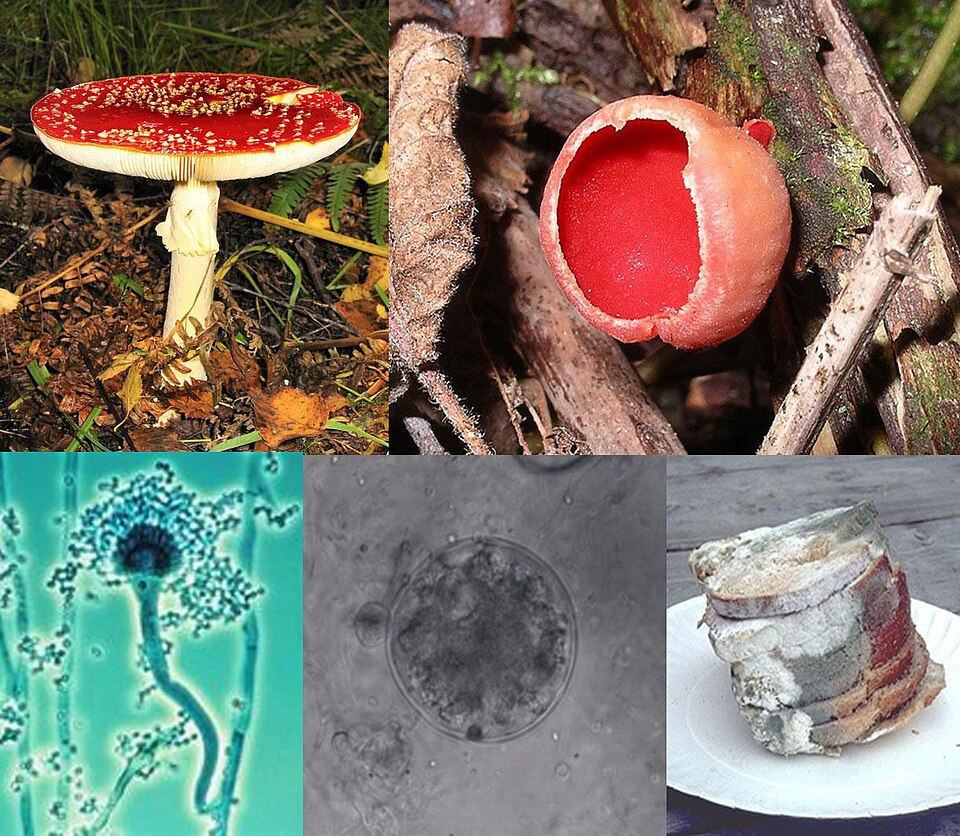

-
clockwise from top left
- Amanita muscaria, a basidiomycete
- Sarcoscypha coccinea, an ascomycete
- bread covered in mold
- a chytrid
- an Aspergillus conidiophore
A characteristic that places fungus in a different kingdom from plants, bacteria, and some protists is having chitin in their cell walls. Fungi, like animals, are heterotrophs: they acquire their nutrition by absorbing dissolved organic molecules, typically by secreting digestive enzymes into their environment. A fungus does not perform photosynthesis. Growth is their means of motility, except for spores (a few of which are flagellated), which may travel through the air or water. Fungi are the principal decomposers in ecological systems. These and other differences place fungi in a single group of related organisms, named the Eumycota (true fungi or Eumycetes), that share a common ancestor (i.e. they form a monophyletic group), an interpretation that is also strongly supported by molecular phylogenetics. This fungal group is distinct from the structurally similar myxomycetes (slime molds) and oomycetes (water molds). The discipline of biology devoted to the study of fungi is called mycology (from the Greek μύκης, mykes 'mushroom'). In the past, mycology was regarded as a branch of botany, although it is now known that fungi are genetically more closely related to animals than to plants.
